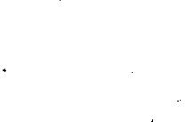

Kalleş Ülke
Uykusunda sanki bir akrep ya da bir yengeç tam kalçasının altında bir yerde bacağını ısırıyordu. Uyandı. Güneş çoktan yükselmişti, Tom’un gözleri kamaştı: Nereye baksa, çam dallarının arasından pırıl pırıl gökyüzünü görüyordu. Sonra dün, hava iyice kararıp artık arkadaşlarını bulamayacağını anladığı zaman yaralı bacağı da ağrımaya başladığından, kendini buraya attığını anımsadı. Önce hemen bacağına baktı: Sargı bezi neredeyse kara bir leke olup yaraya yapışmış, çevresi de iyice şişmişti.
İlk başta önemsiz bir şey sanmıştı. Çarpışma sırasında kurşun, bacağını sıyırıp geçtiği zaman aldırış bile etmemişti. Daha sonra, ormana doğru çekilirlerken, “Yok canım, pekâlâ yürüyebiliyorum, yalnız da giderim,” demekle yanlış yapmıştı. Ama o zaman gerçekten sadece azıcık topallıyordu. Ansızın ağaçların arasından bir yaylım ateşi başlayıp da direnişçiler çil yavrusu gibi dağılınca, Tom onlara yetişememiş, geride kalmıştı. Bağıramazdı da; böylece kaybolmuş, derken gece bastırmıştı. Kendini çam iğnelerinin üstüne atmış, kim bilir kaç saat uyumuştu. Artık sabah olmuştu. Galiba biraz ateşi vardı. Nerede olduğunu da bilmiyordu.
Kalktı, silahını omuzladı ve dünden beri baston gibi kullandığı fındık dalına dayandı. Ne yöne gideceğini bilmiyordu; orman öylesine sıktı ki çevresini göremiyordu. Tepenin yamacında boz renkli bir kaya vardı. Tom bin bir güçlükle oraya tırmandı. Aşağı bakınca, alabildiğince uzanan vadiyi gördü. Durağan gökkubbenin altında, tam ortadaki bir tepede set set cılız bağlarla çevrili, üst üste yığılmış gibi duran evlerden oluşan bir köy görünüyordu. Tozlu bir araba yolu döne döne yukarı tırmanıyordu. Her yer sessiz, yaprak kımıldamıyordu. Ne evlerin önünde, ne tarlalarda tek bir insan vardı. Bir kuş bile uçmuyordu. Yol güneşin altında, kertenkeleler için çizilmiş gibi uzayıp gidiyordu. Sanki bir çarpışmanın ertesi günü değilmiş gibi, düşman askerlerinden de hiçbir iz yoktu.
Tom o köyü biliyordu. Çok yakında değil ama bir iki ay önce gitmişti bir kez. Yerleşik bir düşman garnizonu olmadığı halde, düşman kuvvetlerinin konakladığı yerlere giden yolların oradan geçtiğini ve tuzaklar kurulabileceğini hesaba katan direnişçiler, birkaç aydır küçük gruplar halinde o köye saldırılar düzenliyorlardı. Ama iyi aylarda, yani bütün yöre direnişçilerin elindeyken ve köylerde kendi evlerindeymiş gibi gezebilirlerken, Tom bir gün oradan geçmiş, ellerinde çiçek demetleri taşıyan kızlar, kurulu sofralarda tabak tabak makarnalar, dışarıda dans edip şarkı söyleyenler görmüş, herkesle ahbaplık etmişti. Kendi kendine “o köye gideceğim,” dedi, “orada, kesin bana destek olacak ve arkadaşlarımı bulmama yardım edecek birilerini bulurum.”
Ama silah arkadaşı Fulmine’nin söylediği ve o âna kadar önemsemediği sözler birden aklına geldi. O şenlik sırasında Fulmine, bütün köy halkını görmek istediğini ama birçok kimsenin hiç ortaya çıkmadığını söylemişti... Kara sakallı Fulmine bu sözleri söylerken, tüfeğinin kabzasını okşayarak alaylı alaylı gülmüştü. Tom ormandan çıkıp yoldan aşağı yürüdü.
Güneş hâlâ parlıyordu ama sanki hem ışığı hem de sıcaklığı azalmış gibiydi. Gökyüzünden sarı bulutlar geçiyordu. Tom, ağrısı artmasın diye bacağını bükmemeye çalışarak yürüdü; alnında ter damlaları birikmişti; bir an önce en yakın eve ulaşmak derdindeydi ama asıl istediği, daha önce bir insana rastlamak, bir yığın kiremit ve sımsıkı kapalı pencerelerden ibaretmiş gibi duran bu köyde yaşayanlar olduğunu belirten bir işaret görmekti.
Bir tarlanın çevresindeki duvara bir ilan yapıştırılmıştı: “Alman askerî komutanlığı, direnişçi eşkıyaları ölü ya da diri olarak ele geçirmeye yardım edecek herkese...” Tom bastonunun ucuyla kâğıdı yırttı ama çok iyi yapıştırıldığı için epey zorluk çekti.
Duvar bittikten sonra tel örgü başlıyordu. Bir incir ağacının gölgesinde bir tavuk eşeleniyordu. Tavuk olduğuna göre, herhalde insanlar da vardı; Tom tellerin ve bir çardağa tırmanan asma kabağı yapraklarının arasından baktı ve gözlerini ona dikmiş, kabak gibi sapsarı ve devinimsiz bir yüz gördü. Bu, kara giysili, yaşlı bir kadındı. Tom “Hey!” der demez yaşlı kadın tek söz söylemeden arkasını dönüp yürüdü. Tavuk da gıdaklayarak peşinden gitti. Tom kadını çağırmak için yine “Hey!” diye seslendi ama kadınla tavuk, kümesi andıran bir barakaya girip kayboldular ve paslı kilitte dönen bir anahtar sesi duyuldu.
Tom yürümeye devam etti. Bacağının ağrısı artmıştı ve midesi bulanıyordu. Az sonra harman yeri gibi bir alana geldi. Bahçe kapısından içeri girdi. Yerde koca bir domuz kımıldamadan yatıyordu. Kasketini öne eğmiş, havanın sıcaklığına karşın sırtında bir kebe olan, tiridi çıkmış bir ihtiyar ağır ağır ona doğru geliyordu. Tom adama yaklaştı ve “Bakın,” dedi, “bugün buralarda Almanlar yok, değil mi?” Adam yüzünü göstermeden başını salladı ve kendi kendine homurdanır gibi “Almanlar mı?” dedi. “Ben bilmem, buralarda hiç Alman görmedim...”
Tom “Ne demek hiç görmedim?” dedi, “Ya dün? Dün buraya çıkarma yapmadılar mı? Çarpışma olmadı mı?”
Yaşlı adam kebesine sarındı. “Ben bilmem, ben hiçbir şey bilmem...” dedi. Tom’un sabrı taştı. Bacağı fena ağrıyor, yarası büzülüp kasılıyor, bütün kasları çekilir gibi oluyordu. Yine yapayalnız ortada kalmıştı.
Yol, evlerin arasından yukarı doğru gidiyordu. Belki tek başına, hem de bu sakat haliyle köye girmek akıl işi değildi. Ama silahı vardı; üstelik, birkaç ay önce nasıl coşkuyla karşılandığını anımsadı, bu da köylülerin arasında direnişçilerden yana olanların bulunduğunu gösteriyordu.
O sırada, köşeden kırmızı enseli, şişman bir adam fırladı. Adam evin merdivenlerinden çıkarken Tom arkasından yetişti.
“Bakar mısınız?” dedi ama öteki başını çevirmeyince Tom da basamakları tırmandı ve adamın kapıyı kapatmasını engelledi.
Şişman herif, “Ne istiyorsunuz?” dedi.
Tom içeride kurulmuş bir sofra ve üstünde ‘dumanları tüten bir çorba kâsesi gördü, üç tane iri göğüslü ve bıyıklı kadınla, dudağının üstünde tıpkı kadınlarınki gibi kara kıllar olan zayıf bir genç, ellerinde kaşıklarla masa başında oturuyordu.
Tom kararlı adımlarla ilerleyerek “Bir tabak çorba,” dedi, “kırk sekiz saattir yemek yemedim. Yaralıyım.”
İri yarı kadınların ve cılız gencin bakışları Tom’dan ayrılıp aile reisine döndü ve adam burnundan soluyarak “Yasak,” dedi. “Yapamayız. Resmi bildiri var.”
Tom, “Ne bildirisi?” dedi. “Kimden korkuyorsunuz be? Köyde bir düşman garnizonu yok ya! Bildiri yırtılıp atılır!”
Şişman adam yine “Yasak...” diye yineledi.
Tom, “Şimdi silahımı herife çevireceğim,” diye düşündü ama bitkindi ve bastonuna dayanmak zorunda kaldı. Oturmak istiyordu ama odada boş iskemle yoktu.
Başını çevirince duvarda, bir Hollanda takviminin arkasına saklanmış bir at resmi gördü. Göğsünü şişirip çalımla yürüyen güçlü bir attı bu, üzengilerinde kara çizmeli iki ayak, daha yukarıda da şiş göbekli bir adamın madalyalarla dolu geniş göğsü görünüyordu; resmin üst bölümü takvimin arkasında kalmıştı. Tom takvimi kaldırınca Mussolini’nin balta çenesini ve parlak miğferini gördü. “Bu ne arıyor burada?” diye sordu.
Şişman adam, “Ha, o mu?” dedi, “Eski bir resim işte, kaç zamandır ortalığa bir çekidüzen veremedik de.” Böyle diyerek resmi saklamaya uğraştı ama bir yandan da tozunu siliyor, bir yerine bir şey olmamasına özen gösteriyordu.
Tom kendi kendine söylenir gibi “Anlamıyorum,” dedi, “Daha birkaç ay önce bizleri büyük coşkuyla karşılamıştınız bu köyde... makarna ziyafetleri... hora tepmeler... çiçekler... Hatırlamıyor musunuz?”
Adam, “Şey... biz o zaman burada değildik...” dedi.
Bıyıklı kadınlardan biri kendini tutamayıp söze karıştı: “Ama makarnalar bizim unlarla yapılmıştı. Tam otuz çuval...’’ Ancak kocası ters ters bakınca sözlerini yarıda kesti.
Tom, Fulmine’nin dediklerini anımsadı. “Peki, ya o zaman burada olanlar, bizim dostlarımız, neredeler...?”
Şişman adam, “Şey...” dedi, “Bilemiyorum... birçok aile... son zamanlarda buradan taşındı... delikanlı, siz en iyisi belediyeye gidin, podestâ’nın3 huzuruna çıkın, onlar size yardımcı olur...”
“Podesta mı? Ben bütün şarjörümü boşaltırım sizin podestâ’nızın karnına. Bir doktora gereksinimim var... yaralıyım.”
“Evet, evet, doktor,” şişman adam sözlerini sürdürdü, “meydanda bulursunuz kendisini, bu saatte hep oradadır.” Bir yandan da Tom’u itekleyerek eşiğe kadar götürdü ve kapıyı yüzüne kapatıverdi.
Tom kendini sokakta buldu. Şimdi çevrede toplanan birkaç kişi küçük gruplar halinde, onunla göz göze gelmemeye çalışarak aralarında fısır fısır konuşuyordu. Kara sarı suratlı, sırık gibi uzun, sıska bir papaz saçları darmadağınık, kısacık boylu bir kadına bir şeyler söylüyor ve galiba parmağıyla da Tom’u gösteriyordu.
Topallaya topallaya gittikçe daha ağır yürüyen Tom bütün bu yüzleri az önce görmüş olduğunu sandı; kara sarı suratlı papaz bir görünüp bir kayboluyor, bütün gruplara yaklaşıp alçak sesle bir şeyler anlatıyordu. Tom köylülerin bakışlarının yavaş yavaş değiştiğini fark etti, artık onunla ilgilenir gibiydiler; bazı yüzlerde yaltakça bir gülümseme bile sezdi; derken papazla konuşan kısa boylu kadın bir koşu yanına geldi ve “Zavallı evladım,” dedi, “ayakta duracak halin kalmamış, gel benimle.”
Bu, sansar suratlı bir kadındı; elindeki kayıt defterine ve bir üniformadan bozma gibi duran kara giysisindeki tebeşir tozlarına bakılırsa, bir öğretmen olabilirdi.
“Kendini tanıtıp teslim olmaya mı geldin? Aferin!” Öğretmen kadın bu sözleri söylerken, bir yandan da sanki sırtındaki bir yükü almak istercesine, omzundan silahını çekmeye uğraşıyordu.
Ama Tom silahın kayışını sımsıkı tutuyordu. “Ne? Kendimi tanıtmaya mı? Kime?”
Öğretmen bir sınıfın kapısını açmıştı. Bütün sıralar bir köşeye yığılmıştı ama duvarlarda hâlâ Roma tarihini, eski imparatorların zaferlerini gösteren resimler, Libya ve Habeşistan haritaları asılıydı. Öğretmen onu içeri tıkıp kapıyı kapatmak ister gibi, “Otur burada, burası okul, şimdi hemen sıcak bir çorba getiririz,” dedi.
Tom kadını itti ve “Bir doktor,” dedi, “tez elden bir doktora gitmem gerek.” Alanda toplanmış insanların arasında, kolunda beyaz bir bant ve üstünde koskoca kırmızı bir haç olan kara giysili ufak tefek bir adam vardı.
Tom ona dönerek, “Siz doktorsunuz, değil mi?” dedi. “Bir dakika sizi görmem gerek”
Ufak tefek adam dişsiz ağzını açtı ve ne yapacağını bilmez gibi çevresine bakındı. Ama yanındakiler onu iteleyerek bir şeyler fısıldadılar ve doktor Tom’a doğru yürüdü, kolundaki kırmızı haçı işaret ederek “Ben tarafsızım, ne bir yanı, ne öteki yanı tutarım, sadece görevimi yaparım” dedi.
Tom, “Tamam, tamam” dedi, “Bana ne? Beni hiç ilgilendirmez!” ve doktorun arkasından alandaki bir eve doğru yürüdü. Öbürleri epey geriden onları izliyorlardı; derken, zuhaf askerleri gibi paçaları büzgülü bir pantolon giymiş, otoriter tavırlı, sinirli bir adam kalabalığı yararak ilerledi ve işi kendisine bırakmalarını işaret etti.
Tom doktorun peşinden yarı karanlık ve asit fenik kokan bir muayene odasına girdi. Kirli sargı bezleri, enjektörler, küvetler, stetoskoplar, karmakarışık bir halde dört bir yana atılmıştı. Doktor panjurları açınca muayene masasının üstündeki kedi dışarı fırladı.
Doktor “Şuraya uzat bacağım” dedi; soluğu leş gibi şarap kokuyordu. Tom bağırmamak için dudağım ısırdı, o arada doktor titreyen, beceriksiz parmaklarıyla yarasını deşiyordu. Bir yandan da durmadan, “Korkunç iltihaplanmış, irin dolu, berbat bir yangı” diye söyleniyordu. Tom’a adam hiç susmayacak gibi geldi.
Doktor şimdi bir tomar gazlı bez almış, açmaya çalışıyor ama yarayı saracak yerde, bezi oraya buraya, masanın çevresine, Tom’un koluna sarmaya çalışıyordu. Sonunda, Tom dayanamadı ve “Siz sarhoşsunuz! Bırakın, ben yaparım!” diye bağırarak sargı bezini adamın elinden aldı ve iki dakikada yarasın güzelce sıkı sıkı sardı.
“Ateş düşürücü vereceğim,” diyen doktor etrafa saçılmış numunelik, bedava ilaç kutularının arasında sallanıp durduğu için, kendisi olaya el koydu, bir kutu ilaç buldu, içinden iki hap çıkarıp yuttuktan sonra kutuyu da cebine attı.
Doktora, “Her şey için teşekkürler,” dedi ve silahını omuzlayıp çıktı. Ama başı dönüyordu. Kapıda onu bekleyen zuhaf askeri pantolonlu adam tutmasaydı yere düşecekti. Adam, “Senin dinlenmeye gereksinimin var, bitkinsin.” dedi ve demir kapının ötesindeki yarı villa yarı çiftlik evi gibi bir yapıyı işaret ederek ekledi: “Gel benim evime...” Gözleri kararan Tom onun peşinden yürüdü.
İçeri girer girmez arkalarından kapı kendiliğinden kapandı. Eski bir kapı olmasına karşın emniyet kilidi vardı. O sırada zil çaldı, zilin garip bir sesi vardı, kiliselerdeki cenaze çanları gibi, hep aynı tonda, uyumlu ve belli aralıklarla, tıpkı bir telgraf mesajı verir gibi çalıyordu. Tom bayılmamak için bütün dikkatini o sese vererek, “Sanki bir mesaj veriyorlar,” diye düşündü. Sonra, zuhaf askeri pantolonlu adama dönerek, “Nedir bu? Neden bu saatte böyle çanlar çalınıyor?” diye sordu.
“Yok bir şey. Papaz herhalde ayin yapacak.”
Tom’u kanepe ve sedirler olan, dayalı döşeli bir salona soktu. Masada, içinde şişe ve kadehler bulunan bir tepsi duruyordu. Adam, “Şu likörden tadın,” diyerek, Tom’un likör değil başka şey istediğini söylemesine fırsat vermeden bir bardak içiriverdi.
“Şimdi izninizle gidip bakayım, yemek hazır mı,” dedi ve dışarı çıktı. Tom kendini kanepeye attı. Hâlâ din-dan-don diye çalmayı sürdüren çan sesi başını döndürmüş, gevşemiş, derin bir uykuya dalmak üzereydi. Karşısında duran büfenin rafındaki kara bir lekeye bakıyor, uyumamak için bütün dikkatini onun üstünde toplamaya uğraşıyordu ama leke yayılıp genişliyor, biçimi bozuluyor ve Tom olanca gayretiyle lekeyi odaklamaya, net bir görüntü sağlamaya, asıl kara ve yuvarlak biçimine getirmeye çalışıyordu; gözlerini açık tutabilse ne olduğunu çıkaracaktı: Tamam işte, bu yuvarlak, kara, tepesinden sarkan parlak ipek bir püskülü olan bir başlıktı: Büfedeki fanusun altında faşist liderlerin giydiği kara feslerden biri vardı.
Tom kanepeden kalkmıştı. Ta uzaktan gelen vızıltı gibi bir ses duydu. Kulak kabarttı. Yakınlarda bir yerden bir kamyon geçiyor olmalıydı. Belki de birden fazla... motor gürültüsü gittikçe artıyordu. Tom bütün gücüyle kendisini saran uyuşukluktan kurtulmaya çalışıyordu. Çanların verdiği işarete bir yanıt gibi gelen bu motor gürültüsü hafiften camları zangırdatmaya başlamıştı. Çan sesi en sonunda susmuştu.
Tom pencereye gidip perdeyi araladı. Pencere, bir urgancıyla çıraklarının çalıştığı taş döşeli bir avluya bakıyordu. Tom yüzlerini göremiyordu ama hepsi yaşlı, kalın kara bıyıklı, kabadayı tiplerdi. Hiç konuşmadan, örerek urgan yapmak üzere, kalın kenevir çilelerini hızlı hızlı çekip büküyorlardı.
Tom döndü ve kapının kolunu tutup çevirdi. Karşısına çıkan koridorda üç tane kapalı kapı vardı. İkisi kilitliydi, alçak ve küçük olan üçüncüsü, tuğla basamaklı, karanlık bir merdivene açılıyordu. Tom aşağı inince kendini geniş ve bomboş bir ahırda buldu. Yemliklerde kuru otlar vardı. Dört yanda demir parmaklıklar görünüyordu ama kapı yoktu. Motor gürültüsü gittikçe artıyordu. Belki de bir sürü kamyon tozu dumana katarak dönemeçli yoldan köye doğru tırmanmaktaydı. Kapana kıstırılmıştı.
O sırada, kendisini çağıran bir ses duydu: “Direnişçi! Hey, direnişçi!” Otların arasından örgülü saçlı küçük bir kız çıktı.
Elinde kırmızı bir elma vardı ve Tom’a uzatarak, “Al,” dedi, “ısır ve gel benimle.” Ot yığınlarının arkasında, duvardaki bir gediği işaret etti. Delikten çıkınca kendilerini yabani sarı çiçeklerle dolu, ekilmemiş bir tarlada buldular. Tepelerinde, eski şatonun harap duvarları yükseliyordu. Sese bakılırsa, kamyon sürüsü son virajı dönmekteydi.
Küçük kız, “Sana kaçacağın yolu göstermem için yolladılar beni,” dedi.
Tom elmayı ısırarak, “Kim?” diye sordu ama bu küçük kıza gözü kapalı güvenebileceğinden hiç kuşkusu yoktu.
“Hepsi. Köyde saklanan ve ortaya çıkamayan hepimiz. Yoksa bizi gammazlarlar. Benim de iki ağabeyim var direnişçilerin arasında. Tarzan’ı tanır mısın? Ya Bufera’yı?”
Tom, “Evet,” dedi ve “her köyün, en düşman ve acımasız görünenin bile, iki tane yüzü vardır ve er geç iyi yüzünü keşfeder, hep var olduğunu ama göremediğini, umut etmeyi bilemediğini anlarsın,” diye düşündü.
“Bağların arasındaki şu dar yolu görüyor musun? Oradan in aşağı, hiç kimse göremez seni. Sonra şu küçük köprüden geç ama çabuk ol, çünkü açıktadır ve her yerden görülür. Sonra ormana dal. Koca meşenin dibindeki mağarada sürüyle yiyecek bulursun. Bu gece Susanna adında bir kız gelip kılavuzun olacak ve seni arkadaşlarının olduğu yere götürecek. Hadi git direnişçi, git ve çabuk ol!”
Tom bağ kütüklerinin arasından aşağı inerken bacağının ağrısını duymuyordu bile; küçük köprüyü geçtikten sonra güneş ışınlarının sızamadığı sık ve kopkoyu, neredeyse kara bir orman vardı. Köyden gelen motor gürültüsü arttıkça orman daha da sık görünüyordu. Tom, “Şu elmanın koçanını dereye atabilirsem kurtuldum demektir,” diye düşündü.

Boş tarladan ona bakan örgülü saçlı küçük kız, Tom’un dar köprüden geçtiğini, kısa bir duvarın arkasına saklandığını, sonra derenin genişleyip ufak bir göl oluşturduğu yerde, elma koçanının pırıl pırıl sulara düşüp sıçrattığı damlaların sazları ıslattığını gördü.
Sevinçle ellerini çırptı ve dönüp gitti.
Çeviren: Sernin Sayıt